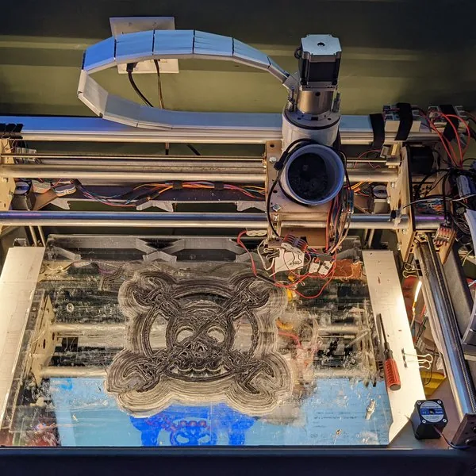

Trash Printer V3: build a recycled-plastic printer from older printer parts
- The project combines local waste plastic with motion parts salvaged from older 3D printers to create an accessible recycling/printing machine.

- Record L17
- Sources reviewed 2026-10-21
- Hands-on status No KitAgain hands-on hardware test
- 0/5 dimensions have verifiable sources
- The current review supports only docs/community. Other dimensions remain null, so fewer than three evidenced dimensions means this route is not yet rated.
Decide before you build
- Current stage The project combines local waste plastic with motion parts salvaged from older 3D printers to create an accessible recycling/printing machine.
- Practical readiness Suitable for equipped makerspaces studying old-printer parts and waste plastic, not a plug-in desktop appliance.
- User value Addresses both machine-part reuse and plastic waste with an emphasis on accessible tooling.
- Follow-up recommendation Research with ventilation, fire protection and fabrication capability; repair an existing printer first for ordinary printing needs.
Device fit and limits
Known fit or worth checking
- Older printers yielding stepper motors, rails and related parts
- Workshops able to clean plastic and fabricate a frame
Not established or unsuitable
- Melting mixed or unknown plastics
- Unattended home operation
Gaps, next step, and risk
- Why it remains E0 It requires machine fabrication and plastic processing; output quality, contamination, extrusion stability and full cost are not verified by KitAgain.
- Next review step Review current drawings, BOM, feedstock process, temperature range and one complete-print acceptance record.
- Risk and stop condition Plastic heating, dust, cutting and high-power heaters require ventilation, temperature protection and fire controls.
What each link contains
- Trash Printer V3 project ↗hardware-projectDescribes the low-cost goal, salvaged printer parts, tools and plastic-recycling route.https://hackaday.io/project/185691-the-trash-printer-version-3